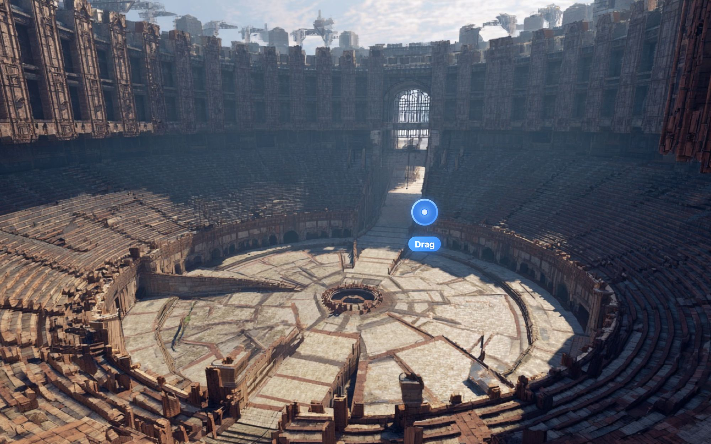
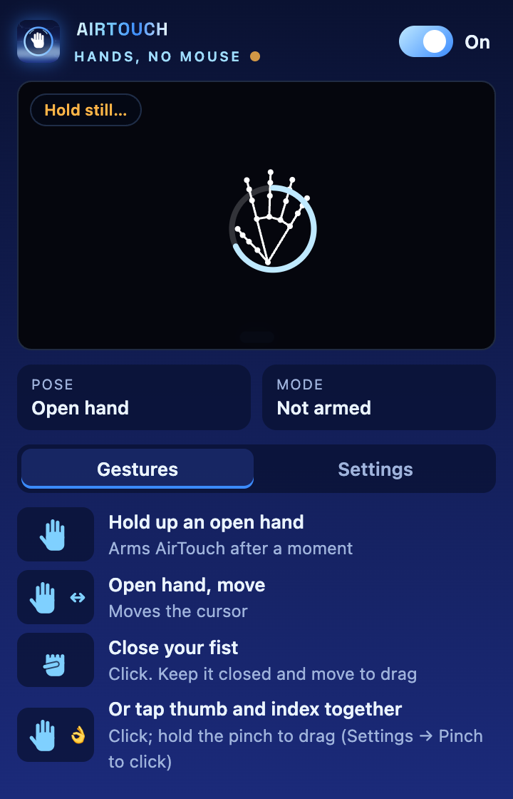
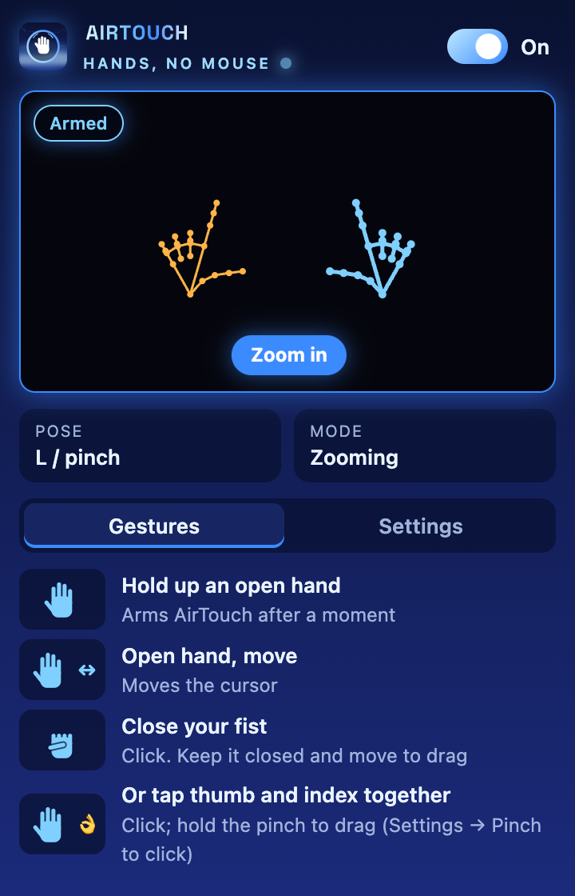
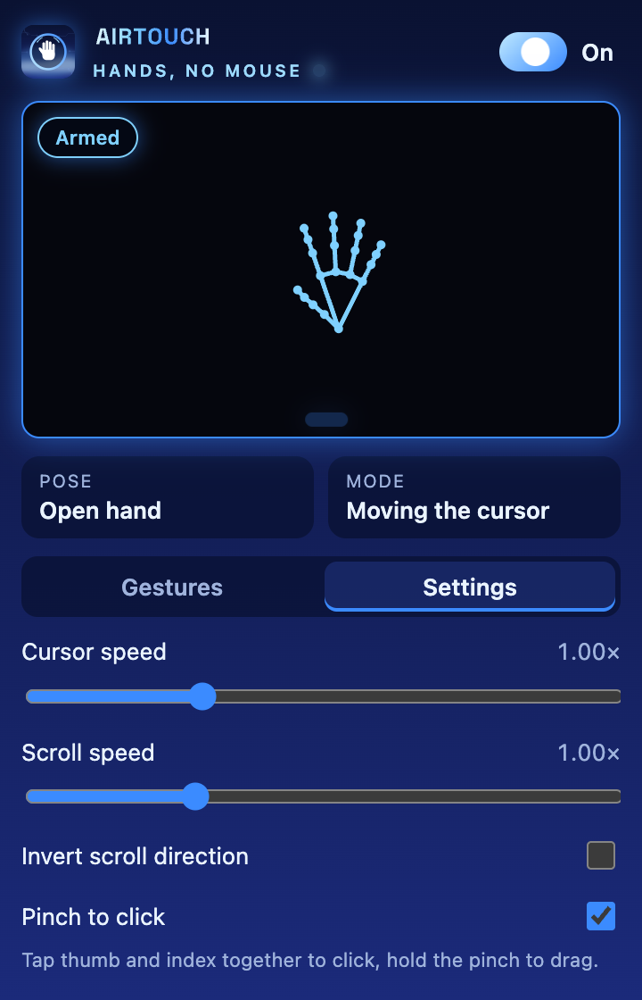

Hand control · a North Watch app
Your hands are the mouse.
Point, click, drag, scroll and zoom with your hands in the air, through the webcam you already have.
In action
Real screens from the app as it is today.




What it does
Point
An open hand moves the cursor.
Click
Close your fist, or tap thumb and index together.
Drag
Keep the fist closed and move.
Scroll
At the speed you set, in the direction you like.
Zoom
Frame the screen with both hands.
Switch desktops
A sideways swipe moves you to the next one.
Free and open source
AirTouch will be released under the MIT licence. It runs on your computer; the camera image never leaves it.
Where it stands
StatusIn development
Open source when it's released.
PlatformsmacOS · Windows
The webcam you already have.